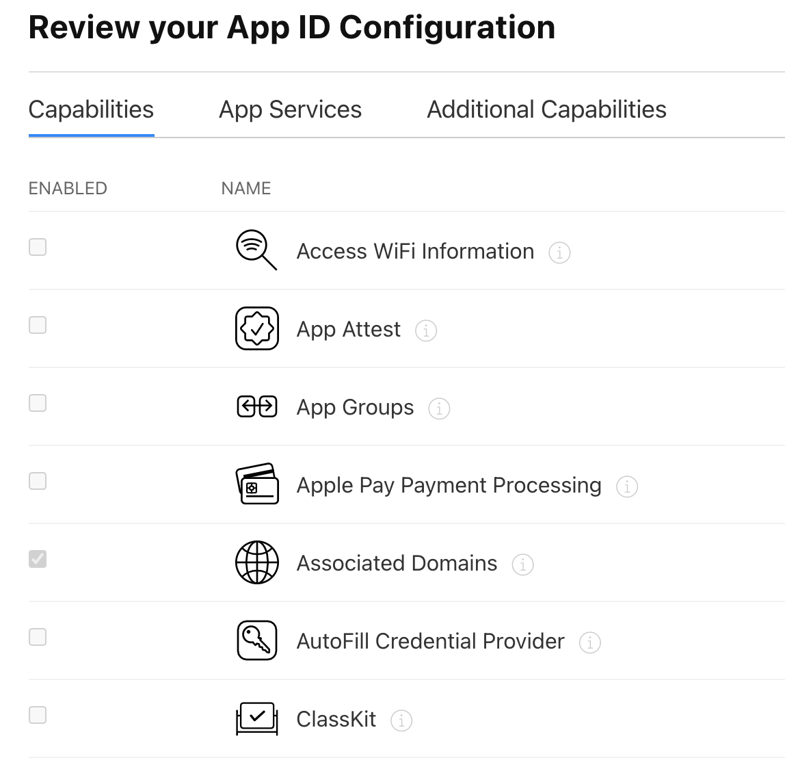

微信 SDK 支持 Universal Links

微信 SDK 更新到 1.8.6 之后，由于适配了 iOS 13，添加了对 Universal Links 的支持，因此开发者也需要对此做一些适配工作。本篇主要记录接入 Universal Links 的过程，主要参考了微信文档和苹果开发者文档。
在开始之前先了解一下 Deep linking，与 Web 开发不同，移动开发中的 Deep linking 是指直接通过链接打开指定的应用甚至是应用中的某个页面。对于 iOS 来说，实现 Deep linking 有两种方式，一种是 URL Scheme，另一种是 Universal Links，后者用于取代 URL Scheme。
作为对比，安卓中也有类似的技术，被称为 App Links，且一共有三种。第一种是 Deep links，用于告诉系统当前应用可以打开哪些类型的页面，当用户点击链接的时候会显示一个弹框（消歧义弹窗），供用户选择要在哪个应用中打开该页面。Web links，与 Deep links 类似，只不过针对的是 HTTP 链接，表示应用可以打开特定的 HTTP 链接，点击时同样会显示一个弹窗，供用户选择在哪个应用中打开。Android 12 之后，所有的 web links 将只能在浏览器中打开。Android App Links，只在 Android 6.0 (API level 23) 之后的系统中可用，是一种特殊的 web links，可以打开 HTTP 或者 HTTPS 协议的页面，并且包含 autoVerify 属性，该属性可以使得 App 成为打开某个链接的默认应用，而不是每次都展示一个选择弹窗，用户可以在应用设置页查看某个应用可以默认打开的链接。
iOS 中的 Universal Links 的工作方式和安卓中类似，只不过为了安全，操作相对复杂一些。
开启步骤
创建并上传 Association 文件
创建一个名为 apple-app-site-association 的文件，并且上传到 Web 服务器的根目录。苹果通过访问该文件来了解你的网站和哪些应用建立了关联。
该 JSON 文件内容如下：
1 | |
确保 GET 请求能够访问到该文件就可以了。
开启 Associated Domains
Associated Domains 是应用能否可以打开某个链接的关键。首先在开发者账号管理后台中，找到应用的 Identifier，然后在 Capabilities 中开启 Associated Domains，如下图：
开启之后我们还需要更新 XCode 中的证书描述文件，然后在 Capability 中添加 Associated Domains，Domains 中填写：applinks:your.domain.com。其中，scheme 必须是 applinks，后面的 url 是你的网站地址，也就是 Universal Links 中的域名部分。
经过上面这样的设置之后，重新运行项目，在浏览器中打开你的 Universal Links，这个时候你的应用应该就可以响应打开这个链接了。如果不行，说明上面步骤中存在错误的地方，请仔细阅读文档和检查配置过程。大部分情况下，很有可能是 apple-app-site-association 配置有误，请检查 App ID 和 Bundle Id 是否复制错了。
配置 Universal Links
在微信开放平台管理页面中填写 Universal Links，形式如：https://your.domain.com/app/，注意必须以 https 开头和以 / 结尾。
在项目中初始化 SDK 的地方，填写相同的 Universal Links，以 fluwx 为例：
1 | |
最后，还需要在 Xcode 项目配置面板的 Info 选项卡中，找到 LSApplicationQueriesSchemes 并添加一条 weixinULAPI 入口。
结语
作为一名非 iOS 开发者，没想到仅仅是开启 Universtal Links 就已经如此麻烦，虽然这里只写了三个关键步骤，但其实真正操作起来可能还会遇到许多的问题，所以还是要靠自己多搜索和查阅文档才能解决。尽管如此，在一番摸索之后终于配置成功，看到终于可以在应用中打开微信小程序了，也算是一件非常开心的事。文末附上了我参考的文章和文档的链接，希望对你有帮助。
参考链接